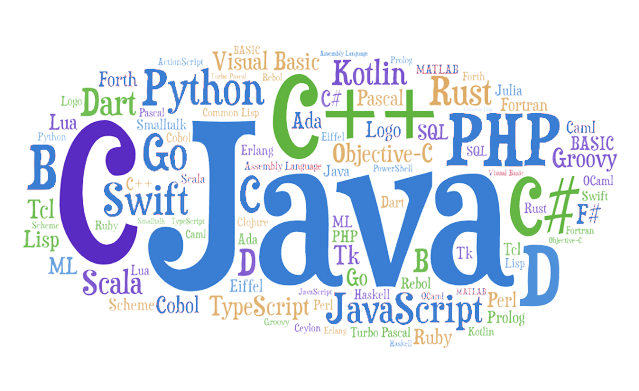

O Que é uma Linguagem de Programação?
No mundo da tecnologia da informação, a comunicação entre humanos e computadores é realizada através de linguagens de programação. Uma linguagem de programação é um conjunto de regras e símbolos que permitem que os desenvolvedores instruam os computadores a executar tarefas específicas. Ela serve como uma interface entre o pensamento humano e a execução de comandos pelos computadores.
Quais são as Linguagens que Existem?
Existem inúmeras linguagens de programação disponíveis atualmente, cada uma com suas características e propósitos específicos. Abaixo estão três exemplos de linguagens populares:
- Python: Uma linguagem de programação de alto nível, conhecida por sua sintaxe clara e legível. Python é amplamente utilizada em diversos domínios, como desenvolvimento web, análise de dados, inteligência artificial e automação de tarefas.
- Java: Uma linguagem de programação orientada a objetos, projetada para ser portável e executar em diferentes plataformas. Java é bastante utilizada para desenvolvimento de aplicativos para dispositivos móveis (Android) e criação de sistemas de larga escala.
- JavaScript: Uma linguagem de programação interpretada, utilizada principalmente para desenvolvimento web. JavaScript permite criar interatividade e dinamismo em páginas da web, além de ser a base para muitos frameworks e bibliotecas populares, como React e Angular.
Esses são apenas alguns exemplos, e existem muitas outras linguagens de programação disponíveis, cada uma com suas características únicas e áreas de aplicação.
Quais são suas Características em Comum?
Embora as linguagens de programação possuam diferenças significativas, há características comuns que são compartilhadas pela maioria delas. Algumas dessas características são:
- Sintaxe: Todas as linguagens de programação possuem uma sintaxe específica, que define a forma como os comandos e estruturas devem ser escritos. Essa sintaxe varia de linguagem para linguagem, mas todas têm regras que devem ser seguidas para que o código seja válido.
- Variáveis: As linguagens de programação permitem a criação e manipulação de variáveis, que são espaços na memória para armazenar valores temporários ou permanentes. As variáveis permitem que os programas armazenem e manipulem dados.
- Estruturas de controle: As linguagens de programação oferecem estruturas de controle, como condicionais (if, else) e loops (for, while), para controlar o fluxo de execução do programa. Essas estruturas permitem a tomada de decisões e a repetição de tarefas.
- Funções: As linguagens de programação permitem a definição e utilização de funções, que são blocos de código reutilizáveis. As funções ajudam a organizar o código, facilitam a reutilização e permitem dividir um programa complexo em partes menores e mais gerenciáveis.
Quais são as Áreas que Elas Atuam?

As linguagens de programação atuam em diversas áreas da tecnologia da informação e são aplicadas em diferentes contextos. Alguns exemplos de áreas em que as linguagens de programação desempenham um papel importante incluem:
- Desenvolvimento web: Linguagens como HTML, CSS, JavaScript, Python, Ruby e muitas outras são usadas para criar páginas e aplicativos web interativos.
- Desenvolvimento de aplicativos móveis: Linguagens como Java (para Android) e Swift (para iOS) são usadas para criar aplicativos para dispositivos móveis.
- Análise de dados: Linguagens como Python e R são amplamente utilizadas para processamento e análise de dados, construção de modelos estatísticos e implementação de algoritmos de aprendizado de máquina.
- Desenvolvimento de jogos: Linguagens como C++, C# e Python são usadas para desenvolver jogos, desde jogos indie até grandes produções.
- Software embarcado: Linguagens como C e C++ são usadas para desenvolver software para sistemas embarcados, como microcontroladores e dispositivos IoT (Internet das Coisas).
Conclusão
Em resumo, as linguagens de programação são essenciais para que os desenvolvedores possam se comunicar com os computadores e criar uma variedade de aplicações. Dominar essas linguagens é crucial para o desenvolvimento de software e soluções tecnológicas inovadoras.
A constante evolução tecnológica destaca a importância de estar atualizado e aberto a novas ferramentas. Aprenda e experimente para se destacar no campo da tecnologia da informação. O conhecimento das diferentes linguagens de programação é fundamental para impulsionar o mundo digital de hoje e do amanhã.